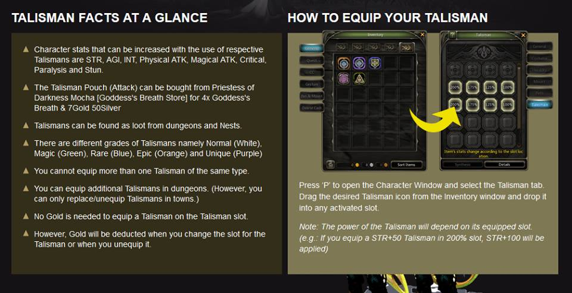
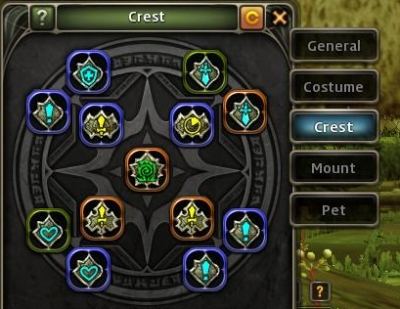

Trying to become strong enough to handle difficult raids? Here's a list of essentials upon hitting max level (you're gonna need a lot of money or luck):

Check out the guide this image came from, written by Pepe from DNSea Perfect right here!
Put your most important Talismans on the right side with the highest multiplier (dmg or tankiness) and everything else on the left. Obtained through MP, Dungeons/Nests or Priestess of Darkness Mocha's (Saint’s Haven) or Priestess of Darkness Tarte’s (Lotus Marsh) Goddess's Breath Store.
Level 70 or 80 Superb Enhancement Crests, and 4 Superb Skill Crests

The outer ring of 8 crests are for stats you need, while the 4 on the inner ring are skill crests. These are obtained as dungone/nest drops or bought in the MP. Skill ones can randomly obtained from Stashy's skill crest pouches (need dimensional fragments from Abyss mode nests).
The one in the center is a crest that actually grants you a boss skill from one of the Hell difficulty Nests. These are pretty garbage as skills, so we highly suggest selling them on the marketplace; they're worth a lot usually.
Level 80 Planet/Meteor Ranchea set, enhanced to at least +7/+8 -> Ruler Weapon/Secondary Weapon -> full Black Dragon Nest Set
Get the lvl 80 Ranchea set (physical or magical) from the MP asap, whether people are selling the equips or the mats to make it. Ideally you can enhance them to +7 or +8 right away but you might only have enough for +6. You need at least this set to do any damage at lvl 80. Because of how strong Final Damage is, you may or may not want to move on to the Ruler weapons if you've got the money (they cost thousands!)